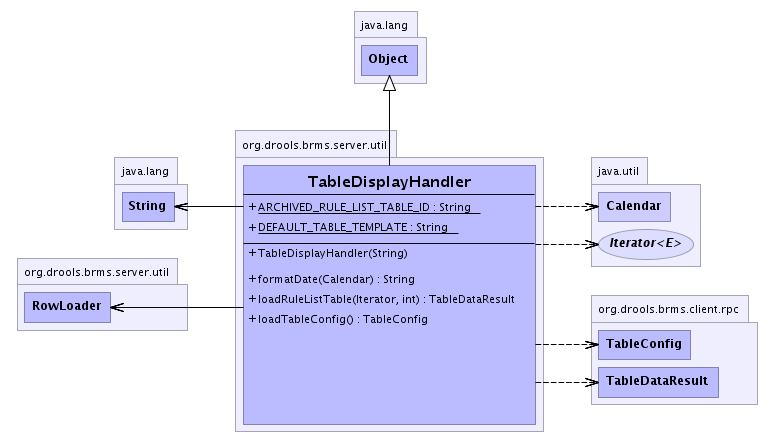

org.drools.brms.server.util
Class TableDisplayHandler
java.lang.Object
 org.drools.brms.server.util.TableDisplayHandler
org.drools.brms.server.util.TableDisplayHandler
public class TableDisplayHandler
- extends java.lang.Object
This utility class handles loading of tables.
This is to give some flexibility in what fields are displayed.
This will likely be dynamic in the future (driven of user config stored in the
repository).
-
- 
|
Constructor Summary |
TableDisplayHandler(java.lang.String tableconfig)
Produce a table dataset for a given iterator. |
| Methods inherited from class java.lang.Object |
clone, equals, finalize, getClass, hashCode, notify, notifyAll, toString, wait, wait, wait |
DEFAULT_TABLE_TEMPLATE
public static final java.lang.String DEFAULT_TABLE_TEMPLATE
- See Also:
- Constant Field Values
ARCHIVED_RULE_LIST_TABLE_ID
public static final java.lang.String ARCHIVED_RULE_LIST_TABLE_ID
- See Also:
- Constant Field Values
TableDisplayHandler
public TableDisplayHandler(java.lang.String tableconfig)
- Produce a table dataset for a given iterator.
- Throws:
com.google.gwt.user.client.rpc.SerializableException- Parameters:
list - The iterator.numRows - The number of rows to go to. -1 means don't stop.
loadRuleListTable
public TableDataResult loadRuleListTable(java.util.Iterator list,
int numRows)
throws com.google.gwt.user.client.rpc.SerializableException
- Throws:
com.google.gwt.user.client.rpc.SerializableException
formatDate
public java.lang.String formatDate(java.util.Calendar cal)
loadTableConfig
public TableConfig loadTableConfig()